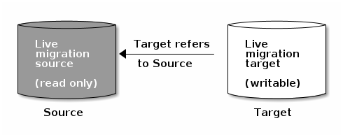

Notice
This document is for a development version of Ceph.
Image Live-Migration
RBD images can be live-migrated between different pools, image formats and/or layouts within the same Ceph cluster; from an image in another Ceph cluster; or from external data sources. When started, the source will be deep-copied to the destination image, pulling all snapshot history while preserving the sparse allocation of data where possible.
By default, when live-migrating RBD images within the same Ceph cluster, the source image will be marked read-only and all clients will instead redirect IOs to the new target image. In addition, this mode can optionally preserve the link to the source image’s parent to preserve sparseness, or it can flatten the image during the migration to remove the dependency on the source image’s parent.
The live-migration process can also be used in an import-only mode where the source image remains unmodified and the target image can be linked to an image in another Ceph cluster or to an external data source such as a backing file, HTTP(s) file, S3 object, or NBD export.
The live-migration copy process can safely run in the background while the new target image is in use. There is currently a requirement to temporarily stop using the source image before preparing a migration when not using the import-only mode of operation. This helps to ensure that the client using the image is updated to point to the new target image.
Note
Image live-migration requires the Ceph Nautilus release or later. Support for
external data sources requires the Ceph Pacific release of later. The
krbd kernel module does not support live-migration at this time.

The live-migration process is comprised of three steps:
Prepare Migration: The initial step creates the new target image and links the target image to the source. When not configured in the import-only mode, the source image will also be linked to the target image and marked read-only.
Similar to layered images, attempts to read uninitialized data extents within the target image will internally redirect the read to the source image, and writes to uninitialized extents within the target will internally deep-copy the overlapping source image block to the target image.
Execute Migration: This is a background operation that deep-copies all initialized blocks from the source image to the target. This step can be run while clients are actively using the new target image.
Finish Migration: Once the background migration process has completed, the migration can be committed or aborted. Committing the migration will remove the cross-links between the source and target images, and will remove the source image if not configured in the import-only mode. Aborting the migration will remove the cross-links, and will remove the target image.
Prepare Migration
The default live-migration process for images within the same Ceph cluster is initiated by running the rbd migration prepare command, providing the source and target images:
$ rbd migration prepare migration_source [migration_target]
The rbd migration prepare command accepts all the same layout optionals as the rbd create command, which allows changes to the immutable image on-disk layout. The migration_target can be skipped if the goal is only to change the on-disk layout, keeping the original image name.
All clients using the source image must be stopped prior to preparing a live-migration. The prepare step will fail if it finds any running clients with the image open in read/write mode. Once the prepare step is complete, the clients can be restarted using the new target image name. Attempting to restart the clients using the source image name will result in failure.
The rbd status command will show the current state of the live-migration:
$ rbd status migration_target
Watchers: none
Migration:
source: rbd/migration_source (5e2cba2f62e)
destination: rbd/migration_target (5e2ed95ed806)
state: prepared
Note that the source image will be moved to the RBD trash to avoid mistaken usage during the migration process:
$ rbd info migration_source
rbd: error opening image migration_source: (2) No such file or directory
$ rbd trash ls --all
5e2cba2f62e migration_source
Prepare Import-Only Migration
The import-only live-migration process is initiated by running the same
rbd migration prepare command, but adding the --import-only optional
and providing a JSON-encoded source-spec to describe how to access
the source image data. This source-spec can either be passed
directly via the --source-spec optional, or via a file or STDIN via the
--source-spec-path optional:
$ rbd migration prepare --import-only --source-spec "<JSON>" migration_target
The rbd migration prepare command accepts all the same layout optionals as the rbd create command.
The rbd status command will show the current state of the live-migration:
$ rbd status migration_target
Watchers: none
Migration:
source: {"stream":{"file_path":"/mnt/image.raw","type":"file"},"type":"raw"}
destination: rbd/migration_target (ac69113dc1d7)
state: prepared
The general format for the source-spec JSON is as follows:
{
"type": "<format-type>",
<format unique parameters>
"stream": {
"type": "<stream-type>",
<stream unique parameters>
}
}
The following formats are currently supported: native, qcow, and
raw. The following streams are currently supported: file, http,
s3, and nbd.
Formats
The native format can be used to describe a native RBD image within a
Ceph cluster as the source image. Its source-spec JSON is encoded
as follows:
{
"type": "native",
["cluster_name": "<cluster-name>",] (specify if image in another cluster,
requires ``<cluster-name>.conf`` file)
["client_name": "<client-name>",] (for connecting to another cluster,
default is ``client.admin``)
"pool_name": "<pool-name>",
["pool_id": <pool-id>,] (optional alternative to "pool_name")
["pool_namespace": "<pool-namespace",] (optional)
"image_name": "<image-name>",
["image_id": "<image-id>",] (specify if image in trash)
"snap_name": "<snap-name>",
["snap_id": "<snap-id>",] (optional alternative to "snap_name")
}
Note that the native format does not include the stream object since
it utilizes native Ceph operations. For example, to import from the image
rbd/ns1/image1@snap1, the source-spec could be encoded as:
{
"type": "native",
"pool_name": "rbd",
"pool_namespace": "ns1",
"image_name": "image1",
"snap_name": "snap1"
}
The qcow format can be used to describe a QCOW (QEMU copy-on-write) block
device. Both the QCOW (v1) and QCOW2 formats are currently supported with the
exception of advanced features such as compression, encryption, backing
files, and external data files. Support for these missing features may be added
in a future release. The qcow format data can be linked to any supported
stream source described below. For example, its base source-spec JSON is
encoded as follows:
{
"type": "qcow",
"stream": {
<stream unique parameters>
}
}
The raw format can be used to describe a thick-provisioned, raw block device
export (i.e. rbd export --export-format 1 <snap-spec>). The raw format
data can be linked to any supported stream source described below. For example,
its base source-spec JSON is encoded as follows:
{
"type": "raw",
"stream": {
<stream unique parameters for HEAD, non-snapshot revision>
},
"snapshots": [
{
"type": "raw",
"name": "<snapshot-name>",
"stream": {
<stream unique parameters for snapshot>
}
},
] (optional oldest to newest ordering of snapshots)
}
The inclusion of the snapshots array is optional and currently only supports
thick-provisioned raw snapshot exports.
Additional formats such as RBD export-format v2 and RBD export-diff snapshots will be added in a future release.
Streams
The file stream can be used to import from a locally accessible POSIX file
source. Its source-spec JSON is encoded as follows:
{
<format unique parameters>
"stream": {
"type": "file",
"file_path": "<file-path>"
}
}
For example, to import a raw-format image from a file located at
/mnt/image.raw, its source-spec JSON is encoded as follows:
{
"type": "raw",
"stream": {
"type": "file",
"file_path": "/mnt/image.raw"
}
}
The http stream can be used to import from a remote HTTP or HTTPS web
server. Its source-spec JSON is encoded as follows:
{
<format unique parameters>
"stream": {
"type": "http",
"url": "<url-path>"
}
}
For example, to import a raw-format image from a file located at
https://download.ceph.com/image.raw, its source-spec JSON is encoded
as follows:
{
"type": "raw",
"stream": {
"type": "http",
"url": "https://download.ceph.com/image.raw"
}
}
The s3 stream can be used to import from a remote S3 bucket. Its
source-spec JSON is encoded as follows:
{
<format unique parameters>
"stream": {
"type": "s3",
"url": "<url-path>",
"access_key": "<access-key>",
"secret_key": "<secret-key>"
}
}
For example, to import a raw-format image from a file located at
https://s3.ceph.com/bucket/image.raw, its source-spec JSON is encoded
as follows:
{
"type": "raw",
"stream": {
"type": "s3",
"url": "https://s3.ceph.com/bucket/image.raw",
"access_key": "NX5QOQKC6BH2IDN8HC7A",
"secret_key": "LnEsqNNqZIpkzauboDcLXLcYaWwLQ3Kop0zAnKIn"
}
}
Note
The access_key and secret_key parameters support storing the keys in
the MON config-key store by prefixing the key values with config://
followed by the path in the MON config-key store to the value. Values can be
stored in the config-key store via ceph config-key set <key-path> <value>
(e.g. ceph config-key set rbd/s3/access_key NX5QOQKC6BH2IDN8HC7A).
The nbd stream can be used to import from a remote NBD export. Its
source-spec JSON is encoded as follows:
{
<format unique parameters>
"stream": {
"type": "nbd",
"uri": "<nbd-uri>",
}
}
For example, to import a raw-format image from an NBD export located at
nbd://nbd.ceph.com with export name image.raw, its source-spec
JSON is encoded as follows:
{
"type": "raw",
"stream": {
"type": "nbd",
"uri": "nbd://nbd.ceph.com/image.raw",
}
}
nbd-uri parameter should follow the NBD URI specification. The
default NBD port is 10809.
Execute Migration
After preparing the live-migration, the image blocks from the source image must be copied to the target image. This is accomplished by running the rbd migration execute command:
$ rbd migration execute migration_target
Image migration: 100% complete...done.
The rbd status command will also provide feedback on the progress of the migration block deep-copy process:
$ rbd status migration_target
Watchers:
watcher=1.2.3.4:0/3695551461 client.123 cookie=123
Migration:
source: rbd/migration_source (5e2cba2f62e)
destination: rbd/migration_target (5e2ed95ed806)
state: executing (32% complete)
Commit Migration
Once the live-migration has completed deep-copying all data blocks from the source image to the target, the migration can be committed:
$ rbd status migration_target
Watchers: none
Migration:
source: rbd/migration_source (5e2cba2f62e)
destination: rbd/migration_target (5e2ed95ed806)
state: executed
$ rbd migration commit migration_target
Commit image migration: 100% complete...done.
If the migration_source image is a parent of one or more clones, the --force option will need to be specified after ensuring all descendent clone images are not in use.
Committing the live-migration will remove the cross-links between the source and target images, and will remove the source image:
$ rbd trash list --all
Abort Migration
If you wish to revert the prepare or execute step, run the rbd migration abort command to revert the migration process:
$ rbd migration abort migration_target
Abort image migration: 100% complete...done.
Aborting the migration will result in the target image being deleted and access to the original source image being restored:
$ rbd ls
migration_source
Brought to you by the Ceph Foundation
The Ceph Documentation is a community resource funded and hosted by the non-profit Ceph Foundation. If you would like to support this and our other efforts, please consider joining now.